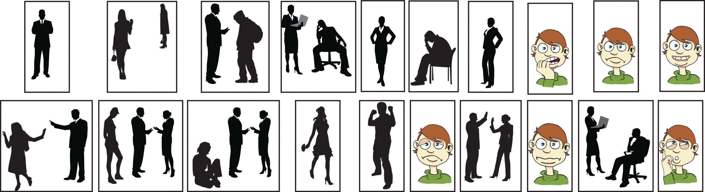

How do you know when your boss or instructors are pleased with your progress (or not)? You might know from the smiles on their faces; from the time and attention they give you; or perhaps in other nonverbal ways, like a raise, a bonus, or a good grade. Whether the interaction takes place face-to-face or at a distance you can still experience and interpret nonverbal responses.
Sometimes we place more emphasis on nonverbal aspects of communication that they warrant. Suppose you have just gotten home from your first date with Amanda and you feel it went very well. How soon should afterward should you call Amanda? There are lots of advice columns, informal rules and customs, and friends with opinions to offer you suggestions, but you know what is right for you. You also know that texting her at five o’clock the next morning might be a bit early. You may choose to wait until a coffee break around 10 a.m. to send a short text message and realize that you might not get a response until later that afternoon.
Does the lack of an immediate response have any meaning? Does it mean Amanda is less interested in you than you are in her? While you might give it more attention than it deserves, and maybe let it weigh on your mind and distract you from other tasks, the time interval for responding may not have as much intentional meaning as you think. It might mean that Amanda has a different sense of time urgency than you do or that she simply didn’t receive your message until later.
Timing is an important aspect of nonverbal communication, but trying to understand what a single example of timing means is challenging. Context may make a difference. For example, if you have known someone for years who has always responded promptly to your e-mails or texts, but now that person hasn’t responded in over a day, you may have reason for concern. That person’s behavior doesn’t match what you are familiar with, and this sudden, unexplained change in the established pattern may mean that you need to follow up.
Figure 4.3
What are each of these images telling us?
Chances are you have had many experiences where words were misunderstood or where the meaning of words was unclear. When it comes to nonverbal communication, meaning is even harder to discern. We can sometimes tell what people are communicating through their nonverbal communication, but there is no foolproof “dictionary” of how to interpret nonverbal messages. Nonverbal communicationThe process of conveying a message without the use of words. is the process of conveying a message without the use of words. It can include gestures and facial expressions, tone of voice, timing, posture, and where you stand as you communicate. It can help or hinder the clear understanding of your message, but it doesn’t reveal (and can even mask) what you are really thinking. Nonverbal communication is far from simple, and its complexity makes our study and our understanding a worthy but challenging goal.
Where does a wink start and a nod end? Nonverbal communication involves the entire body, the space it occupies and dominates, the time it interacts, and not only what is not said, but how it is not said. Try to focus on just one element of nonverbal communication and it will soon get lost among all the other stimuli. Let’s consider eye contact. What does it mean by itself without context, chin position, or eyebrows to flag interest or signal a threat? Nonverbal action flows almost seamlessly from one to the next, making it a challenge to interpret one element or even a series of elements.
We perceive time as linear, flowing along in a straight line. We did one task, we’re doing another task now, and we are planning on doing something else all the time. Sometimes we place more emphasis on the future, or the past, forgetting that we are actually living in the present moment whether we focus on “the now” or not. Nonverbal communication is always in motion, as long as we are, and is never the same twice.
Nonverbal communication is irreversible. In written communication, you can write a clarification, correction, or retraction. While it never makes the original statement go completely away, it does allow for correction. Unlike written communication, oral communication may allow “do-overs” on the spot: you can explain and restate, hoping to clarify your point. You can also dig the hole you are in just a little bit deeper. The old sayings “When you find yourself in a hole, stop digging” and “Open mouth, insert foot” can sometimes apply to oral communications. We’ve all said something we would give anything to take back, but we all know we can’t. Oral communication, like written communication, allows for some correction, but it still doesn’t erase the original message or its impact. Nonverbal communication takes it one step further. You can’t separate one nonverbal action from the context of all the other verbal and nonverbal communication acts, and you can’t take it back.
In a speech, nonverbal communication is continuous in the sense that it is always occurring, and because it is so fluid, it can be hard to determine where one nonverbal message starts and another stops. Words can be easily identified and isolated, but if we try to single out a speaker’s gestures, smile, or stance without looking at how they all come together in context, we may miss the point and draw the wrong conclusion. You need to be conscious of this aspect of your nonverbal behavior, to quote another old saying, “actions speak louder than words.” This is true in the sense that people often pay more attention to your nonverbal expressions more than your words. As a result, nonverbal communication is a powerful way to contribute to (or detract from) your success in communicating your message to others.
Let’s pretend you are at your computer at work. You see that an e-mail has arrived, but you are right in the middle of tallying a spreadsheet whose numbers just don’t add up. You see that the e-mail is from a coworker and you click on it. The subject line reads “pink slips.” You could interpret this to mean a suggestion for a Halloween costume or a challenge to race for each other’s car ownership, but in the context of the workplace you may assume it means layoffs.
Your emotional response is immediate. If the author of the e-mail could see your face, they would know that your response was one of disbelief and frustration, even anger, all via your nonverbal communication. In the same way, you express yourself via nonverbal communication all the time without much conscious thought at all. You may think about how to share the news with your partner and try to display a smile and a sense of calm when you feel like anything but smiling.
Nonverbal communication gives our thoughts and feelings away before we are even aware of what we are thinking or how we feel. People may see and hear more than you ever anticipated. Your nonverbal communication includes both intentional and unintentional messages, but since it all happens so fast, the unintentional ones can contradict what you know you are supposed to say or how you are supposed to react.
People tend to pay more attention to how you say it than what you actually say. In presenting a speech this is particularly true. We communicate nonverbally more than we engage in verbal communication and often use nonverbal expressions to add to, or even replace, words we might otherwise say. We use a nonverbal gesture called an illustratorNonverbal expression that reinforces a verbal message. to communicate our message effectively and reinforce our point. Your coworker Andrew may ask you, “Barney’s Bar after work?” as he walks by, and you simply nod and say “yeah.” Andrew may respond with a nonverbal gesture, called an emblemNonverbal gesture that carries a specific meaning and can replace or reinforce words., by signaling with the “OK” sign as he walks away.
In addition to illustrators or emblematic nonverbal communication, we also use regulators. “RegulatorsNonverbal expression that controls, encourages, or discourages interaction. are nonverbal messages which control, maintain or discourage interaction.”McLean, S. (2003). The basics of speech communication. Boston, MA: Allyn & Bacon. For example, if someone is telling you a message that is confusing or upsetting, you may hold up your hand, a commonly recognized regulator that asks the speaker to stop talking.
Let’s say you are in a meeting presenting a speech that introduces your company’s latest product. If your audience members nod their heads in agreement on important points and maintain good eye contact, it is a good sign. Nonverbally, they are using regulators encouraging you to continue with your presentation. In contrast, if they look away, tap their feet, and begin drawing in the margins of their notebook, these are regulators suggesting that you better think of a way to regain their interest or else wrap up your presentation quickly.
“Affect displaysAn expression of emotion or mood. are nonverbal communication that express emotions or feelings.”McLean, S. (2003). The basics of speech communication (p. 77). Boston, MA: Allyn & Bacon. An affect display that might accompany holding up your hand for silence would be to frown and shake your head from side to side. When you and Andrew are at Barney’s Bar, smiling and waving at coworkers who arrive lets them know where you are seated and welcomes them.
“AdaptorsSomething that helps us feel comfortable or indicates emotions or moods. are displays of nonverbal communication that help you adapt to your environment and each context, helping you feel comfortable and secure.”McLean, S. (2003). The basics of speech communication (p. 77). Boston, MA: Allyn & Bacon. A self-adaptorAdapting something about yourself in way for which it was not designed or for no apparent purpose. involves you meeting your need for security (e.g., playing with your hair) by adapting something about yourself in way for which it was not designed or for no apparent purpose. Combing your hair would be an example of a purposeful action, unlike a self-adaptive behavior. An object-adaptorUse of an object for a purpose other than its intended design. involves the use of an object in a way for which it was not designed. You may see audience members tapping, chewing, or playing with their pencils while ignoring you and your presentation. Or perhaps someone pulls out a comb and repeatedly rubs a thumbnail against the comb’s teeth. They are using the comb or the pencil in a way other than its intended design, an object-adaptor that communicates a lack of engagement or enthusiasm in your speech.
Intentional nonverbal communication can complement, repeat, replace, mask, or contradict what we say. When Andrew invited you to Barney’s, you said, “Yeah” and nodded, complementing and repeating the message. You could have simply nodded, effectively replacing the “yes” with a nonverbal response. You could also have decided to say no but did not want to hurt Andrew’s feelings. Shaking your head “no” while pointing to your watch, communicating work and time issues, may mask your real thoughts or feelings. Masking involves the substitution of appropriate nonverbal communication for nonverbal communication you may want to display.McLean, S. (2003). The basics of speech communication (p. 77). Boston, MA: Allyn & Bacon. Finally, nonverbal messages that conflict with verbal communication can confuse the listener. Table 4.3 "Some Nonverbal Expressions" summarizes these concepts.
Table 4.3 Some Nonverbal Expressions
| Term | Definition |
|---|---|
| Adaptors | Help us feel comfortable or indicate emotions or moods |
| Affect displays | Express emotions or feelings |
| Complementing | Reinforcing verbal communication |
| Contradicting | Contradicting verbal communication |
| Emblems | Nonverbal gestures that carry a specific meaning and can replace or reinforce words |
| Illustrators | Reinforce a verbal message |
| Masking | Substituting more appropriate displays for less appropriate displays |
| Object-adaptors | Using an object for a purpose other than its intended design |
| Regulators | Control, encourage, or discourage interaction |
| Repeating | Repeating verbal communication |
| Replacing | Replacing verbal communication |
| Self-adaptors | Adapting something about yourself in a way for which it was not designed or for no apparent purpose |
Consider the many contexts in which interaction occurs during your day. In the morning, at work, after work, at home, with friends, with family, and our list could go on for quite a while. Now consider the differences in nonverbal communication across these many contexts. When you are at work, do you jump up and down and say whatever you want? Why or why not? You may not engage in that behavior because of expectations at work, but the fact remains that from the moment you wake until you sleep, you are surrounded by nonverbal communication.
If you had been born in a different country, to different parents, and perhaps as a member of the opposite sex, your whole world would be quite different. Yet nonverbal communication would remain a universal constant. It may not look the same, or get used in the same way, but it will still be nonverbal communication in its many functions and displays.
Nonverbal communication can be confusing. We need contextual clues to help us understand, or begin to understand, what a movement, gesture, or lack of display means. Then we have to figure it all out based on our prior knowledge (or lack thereof) of the person and hope to get it right. Talk about a challenge. Nonverbal communication is everywhere, and we all use it, but that doesn’t make it simple or independent of when, where, why, or how we communicate.
Suppose you are working as a salesclerk in a retail store, and a customer communicated frustration to you. Would the nonverbal aspects of your response be intentional or unintentional? Your job is to be pleasant and courteous at all times, yet your wrinkled eyebrows or wide eyes may have been unintentional. They clearly communicate your negative feelings at that moment. Restating your wish to be helpful and displaying nonverbal gestures may communicate “no big deal,” but the stress of the moment is still “written” on your face.
Can we tell when people are intentionally or unintentionally communicating nonverbally? Ask ten people this question and compare their responses. You may be surprised. It is clearly a challenge to understand nonverbal communication in action. We often assign intentional motives to nonverbal communication when in fact their display is unintentional and often hard to interpret.
Steven Beebe, Susan Beebe, and Mark Redmond offer us three additional principals of interpersonal nonverbal communication that serve our discussion. One is that you often react faster than you think. Your nonverbal responses communicate your initial reaction before you can process it through language or formulate an appropriate response. If your appropriate, spoken response doesn’t match your nonverbal reaction, you may give away your true feelings and attitudes.Beebe, S. [Steven], Beebe, S. [Susan], & Redmond, M. (2002). Interpersonal communication relating to others (3rd ed.). Boston, MA: Allyn & Bacon.
Albert Mehrabian asserts that we rarely communicate emotional messages through the spoken word. According to Mehrabian, 93 percent of the time we communicate our emotions nonverbally, with at least 55 percent associated with facial gestures. Vocal cues, body position and movement, and normative space between speaker and receiver can also be clues to feelings and attitudes.Mehrabian, A. (1972). Nonverbal communication. Chicago, IL: Aldine Atherton.
A series of movie clips demonstrate the power of nonverbal communication.
Is your first emotional response always an accurate and true representation of your feelings and attitudes, or does your emotional response change across time? We are all changing all the time, and sometimes a moment of frustration or a flash of anger can signal to the receiver a feeling or emotion that existed for a moment but has since passed. Their response to your communication will be based on that perception, even though you might already be over the issue. This is where the spoken word serves us well. You may need to articulate clearly that you were frustrated, but not anymore. The words spoken out loud can serve to clarify and invite additional discussion.
Building on the example of responding to a situation with facial gestures associated with frustration before you even have time to think of an appropriate verbal response, let’s ask the question, what would you believe, someone’s actions or their words? According to William Seiler and Melissa Beall, most people tend to believe the nonverbal message over the verbal message. People will often answer that “actions speak louder than words” and place a disproportionate emphasis on the nonverbal response.Seiler, W., & Beall, M. (2000). Communication: Making connections (4th ed.). Boston, MA: Allyn & Bacon. This is why it is important for us to be aware of our own nonverbal communication and ensure we are communicating what we mean. In our next section, we will discuss some of the specific types of nonverbal communication.